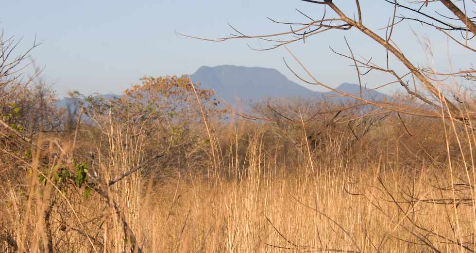
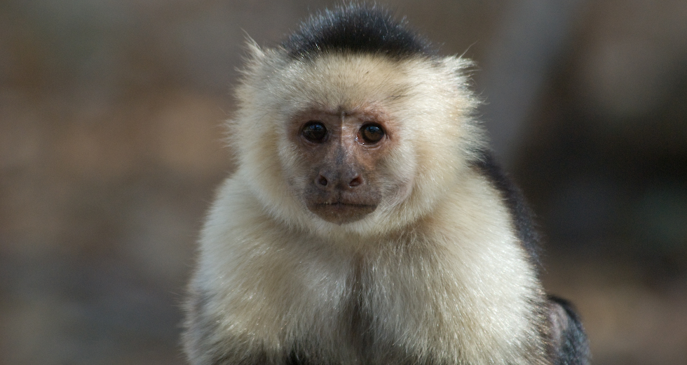
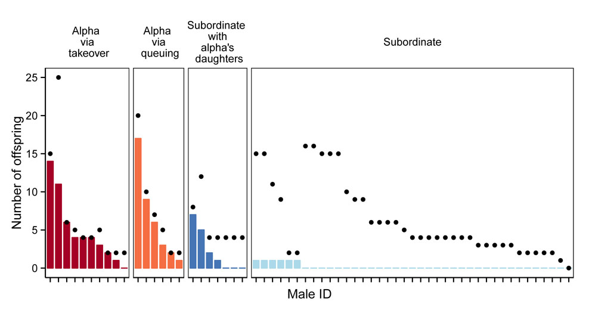
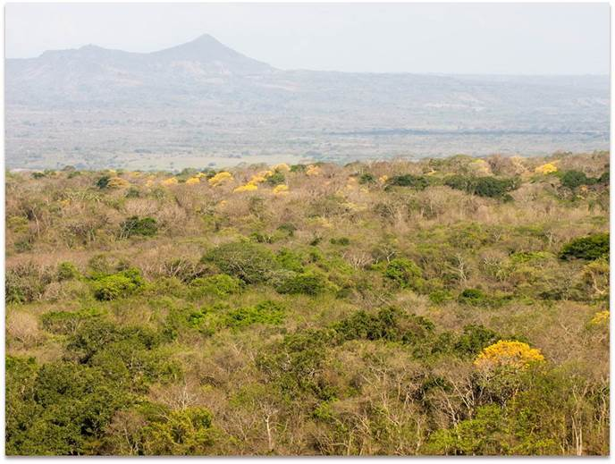

Santa Rosa National Park
For my postdoctoral research, I used non-invasively collected DNA samples to investigate dispersal patterns, genetic structure, and male reproductive success of the primates at Sector Santa Rosa, Área de Conservación Guanacaste (ACG), Costa Rica. This is part of an on-going collaboration between Shoji Kawamura at the University of Tokyo, Linda Fedigan at the University of Calgary, and Katharine Jack at Tulane University .
Inferring genetic structure from sex-biased dispersal
Santa Rosa National Park is a particularly interesting study site to investigate primate dispersal because there are three primate species (black-handed spider monkeys, mantled howler monkeys, and white-faced capuchins) with different types of dispersal patterns. My collaborators and I are using nuclear, mitochondrial, and Y-chromosomal DNA to examine if differences in local genetic structure can be predicted from observed differences in dispersal.
Parallel dispersal and reproductive success
Despite male dispersal and high male reproductive skew, males show a remarkable degree of cooperation and alpha males benefit from the presence of subordinate males. I discovered that parallel dispersal offers an opportunity for males to co-reside and maintain long-lasting bonds with male kin (Wikberg et al. 2014). Although male reproductive skew is high, alpha males with long tenures avoid breeding with their mature daughters, which gives some subordinate males opportunities to reproduce (Wikberg et al. 2016). Other cooperating subordinate males gain the alpha position after the previous alpha male dies or disperses. Future direct fitness benefits from reproductive queuing and inclusive fitness benefits may explain the occurrence of male cooperation despite high reproductive skew.
Lanscape genetics of ACG's primate community
I have recently initated a landscape genetics project in the ACG in collaboration with Fernando Campos at Duke University. We have collected non-invasive DNA samples from white-faced capuchins, mantled howlers, and black-handed spider monkeys residing in six sectors of the ACG. We are currently doing the laboratory analysis required to investigate how landscape features and environmental factors affect gene flow and population structure. In the future, we will examine local adaptation to different habitat types using a population genomics approach.